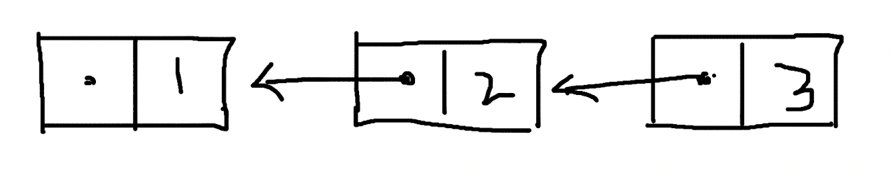

Linked list
Singly-linked list
Singly-linked list 是一种线性的数据结构， 每个节点都包含一个指向下个节点的 field，用于显式表示节点之间的关联关系，一般在程序中会用对象的引用地址来填充这个字段。当然直接使用节点的值也可以，只是为了在数据类型上有明显的区分。
type Node struct {
Value int
Next *Node
}
func main() {
node1 := Node{Value: 1}
fmt.Printf("%p\n", &node1) // 0x14000104210
node2 := Node{Value: 2}
fmt.Printf("%p\n", &node2) // 0x14000104220
node1.Next = &node2
fmt.Println(node1) // {1 0x14000104220}
fmt.Println(node2) // {2 <nil>}
}
node1 的内存地址为 0x14000104210 ，node2 的内存地址为 0x14000104220 ，然后将 node2 的内存地址赋值给 node1 的 next 变量，这个时候只要访问 node1，就可以通过 next 得到 node2 的内容了。以此类推，即使有很多很多 node，只需要知道起始位置 node1 的内容，就可以访问到整个 Linked list 的所有节点了。
Doubly-linked list

Doubly-linked list 在 Singly-lined list 的基础上，多了一个字段，用于保存指向上一个节点的信息。在这样的数据结构下，获得一个节点的内容时，不但可以知道下一个节点的位置，还可以知道上一个节点的位置。
type Node struct {
Value int
Next *Node
Prev *Node
}
(Doubly-linked list) - (Singly-linked list)
Singly-linked list 时保留了下一个节点的信息，Doubly-linked list 上一个和下一个节点的信息都保留了，那么有没有一种数据结构，是只保留上一个节点的信息呢？比如这样：
type Node struct {
Value int
Prev *Node
}
为什么会需要以保留上一个节点信息的形式，构造 Linked list 呢？因为存在这样一种场景：在创建当前节点的时候，下一个节点的内容和引用地址还不确定或者不存在。
当下一个节点内容确定后，还要更改上一个节点的内容吗？Demo 代码改起来是容易的，如果是在一个海量数据的数据库中呢？update 的成本是很高的；如果是在一个分布式系统中呢？网络交互、数据一致性的成本也很高。

也许这样的数据结构并不差劲，它既没有牺牲 Linked list 的特性，又可以在不改动之前节点数据的基础上，使列表不断延长。只不过访问顺序和 Singly-lined list 是相反的，需要按照从最后一个节点向前的顺序才能遍历所有节点，就像是 Singly-linked list 倒过来了。其实倒过来的 Singly-linked list 也是 Singly-linked list。